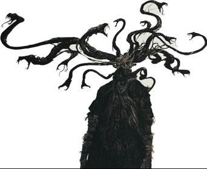
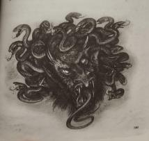
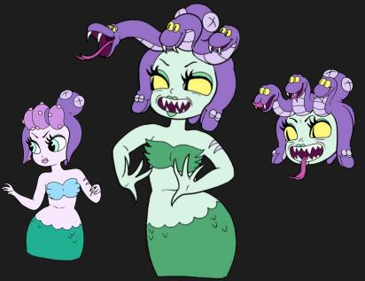

Nous, Méduse(s) est un projet d’exposition immersive et interactive centré sur le corps, le regard porté sur celui-ci et les processus d’émancipation individuelle, à travers le prisme du mythe de la Méduse et de ses multiples réappropriations culturelles. Le projet interroge la manière dont les corps, en particulier les corps féminins, sont regardés, jugés, transformés ou stigmatisés, ainsi que les violences, symboliques ou physiques, qu’ils peuvent subir.
L’exposition s’inscrit dans une volonté de détourner l’iconographie traditionnelle de la Méduse, figure souvent réduite à un monstre pétrifiant, pour en révéler la complexité, la pluralité et la portée symbolique contemporaine. La Méduse devient ici un prisme narratif permettant d’aborder des thématiques plus larges : transformation, monstruosité, acceptation de soi, regard de l’autre et reconstruction.
Le projet débute par une phase de recherches ouvertes et exploratoires, nourrie par un large corpus de références culturelles, artistiques et médiatiques autour de la figure de la Méduse. Cette étape vise à comprendre comment le mythe a été réinterprété au fil du temps, souvent détourné, amplifié ou instrumentalisé, parfois au détriment de sa dimension tragique et symbolique originelle.
Les recherches mettent en lumière une récurrence forte : la Méduse est fréquemment associée à des thématiques liées au corps transformé, au monstrueux, à la malédiction et au regard. Plusieurs références issues de la culture populaire (jeux vidéo, animation) montrent une transformation progressive du corps, passant d’une figure séduisante ou désirable à une forme jugée monstrueuse. Cette bascule interroge directement la manière dont la société associe beauté, normalité et valeur.
En parallèle, d’autres récits mettent en scène des personnages dont le corps devient le lieu même du traumatisme et de l’isolement, mais aussi, parfois, de l’acceptation de soi. Ces histoires nourrissent une réflexion centrale du projet : le corps comme réceptacle de violences, mais aussi comme outil de reconstruction et d’affirmation.
En complément de cette recherche iconographique et narrative, une analyse approfondie du format exposition est menée : benchmarks d’expositions immersives et interactives, critiques, audits, ainsi que visites d’expositions existantes. Cette étape permet de questionner les codes de l’exposition traditionnelle et d’explorer les possibilités offertes par l’interactivité, la narration spatiale et l’immersion sensorielle.
Ces recherches conduisent à définir les fondements de l’exposition :
À l’issue de cette phase de recherche, la problématique du projet se précise : Comment construire une exposition interactive qui interroge le regard porté sur le corps et accompagne une réflexion sur l’émancipation, à travers le mythe de la Méduse et d’autres récits de femmes ?
Nous, Méduse(s) se définit alors comme une exposition immersive abordant le corps sous l’angle de la violence, de la transformation et de la reconstruction. Le pluriel du titre souligne la multiplicité des récits, des vécus et des identités : il n’existe pas une Méduse, mais des Méduse(s), autant de corps et d’histoires singulières.

Une phase importante du projet est consacrée à la construction formelle du parcours. À travers de nombreux exercices d’idéation, le parcours est pensé comme une succession de salles, chacune explorant une facette différente du corps et du regard qui lui est porté.
Le travail porte autant sur la spatialité (formes, volumes, circulation), les
dimensions sensorielles (lumière, son, texture),
et sur la place du visiteur, acteur et observateur à la fois.


Il est séparé en 3 grandes sections :


J'ai eu la chance de dessiner tous les mockups, visuels et storyboards des différentes installations, ils permettent de mieux visualiser et comprendre les intentions artistiques et interactives du projet.
Le parcours commence par une introduction posant le mythe de la Méduse de manière détournée, dans une forêt de coraux qui
évoquent à la fois poséidon, les serpents et les contes de fées qui pour essayer de protéger les jeunes femmes
utilisent la forêt comme un lieu dangereux.
La dimension sonore est travaillée pour immerger le visiteur dès les premiers instants, pour donner l'impression
d'être suivi et observé. le visiteur est invité à avancer dans un couloir sombre, où des murmures et des chuchotements
créent une atmosphère de tension et d'anticipation et où les rubans pendus au branches donnent
l'impression d'être touchés par une présence invisible.
L'ombre d'un homme perché sur un cheval est présente sur un des murs, évoquant la figure de persée.

La seconde salle est une installation qui altère l'image du visiteur et des oeuvres autour de lui, à travers une fontaine en cuivre qui se dégrade avec le temps, déformants son reflet, mais aussi des projections vidéo qui comme un reflet dans l'eau jouent sur la perception et la lumière.


.png)

La troisième salle est une pièce qui expose des oeuvres tout en proposant une expérience sensorielle. Le visiteur est invité à suivre un chemin serpentant, une rampe tactile en cheveux se change peu à peu en serpents, évoquant la transformation progressive du corps de méduse. Les oeuvres exposées sont principalement des sculptures, installées serpents en avant le long du chemin.


.png)
.png)
.png)
.png)
.png)
.png)
Le visiteur passe ensuite dans un couloir qui lui permet d'observer une des salles plus loin dans le parcours, le mettant dans une position d'observateur, avant de l'inviter à entrer dans une salle lumineuse aux murs de roche.

Cette salle propose une expérience interactive où des yeux fixent le visiteur depuis les murs, des miroirs couplés aux oeuvres exposés surmutiplient les regards de méduse qui s'émancipe et sort de son rôle de monstre pour devenir une figure de pouvoir. La foudre se déclenche quand le visiteur s'approche des oeuvres, jouant les sons en rythme avec la lumière, c'est la colère d'une femme qu'on a agressé et reniée.
.png)
.png)
.png)
.png)
La salle suivante du parcours évoque la maternité, méduse mourant donnant naissance à pégase. Le sol est recouvert matelas, le visiteur est invité à toucher les peluches de pégase qui êmètent des sons d'enfants et de battements de coeur.

ensuite les spectateurs repassent de l'autre coté de la fontaine miroir qui est lisse, le reflet est nette et les oeuvres de la pièce sont modernes, méduse y est une femme et une figure populaire.

.png)
.png)


La dernière salle est une sorte de reprise de la première mais d'un point de vue externe, on y retrouve persée mais tout petit et bien éclairé, ce qui le rend insignifiant. La boite à musique au centre de la pièce attend qu'on tourne la manivelle pour lui donner vie. Mais aucun son ne se joue quand elle tourne, juste les figures qui tournent autour de méduse, évoquant la liberté retrouvée.
.png)
La dimension sonore a fait l’objet d’une attention particulière, envisagée comme un levier majeur d’immersion. Le son accompagne les transformations du parcours, soutient les tensions émotionnelles et participe à la narration, en renforçant tantôt le malaise, tantôt l’introspection.
Enfin, une identité visuelle propre à l’exposition est développée afin d’ancrer une image forte et cohérente. Celle-ci s’inscrit dans la continuité des thématiques abordées : corps fragmenté, regard, transformation, ambivalence entre attraction et rejet. L’identité graphique vient unifier l’ensemble du projet et prolonger l’expérience au-delà de l’espace d’exposition.